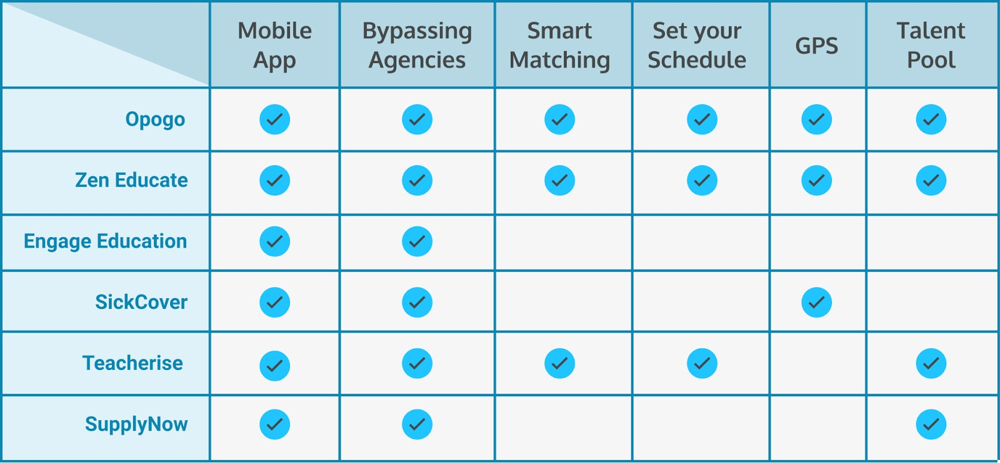
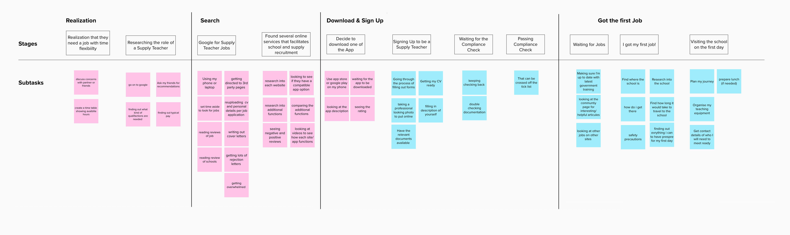
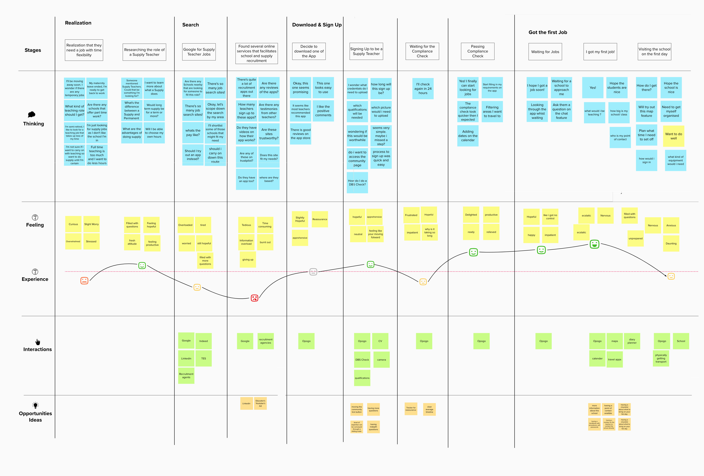
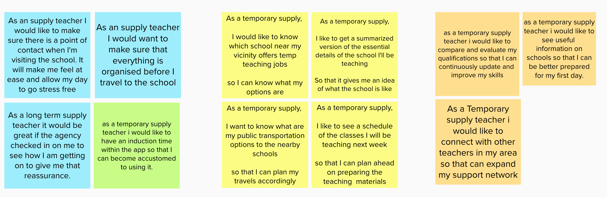
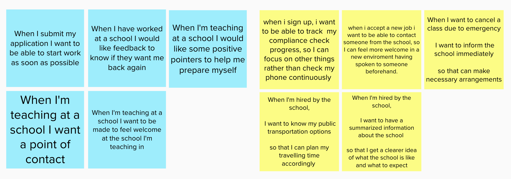
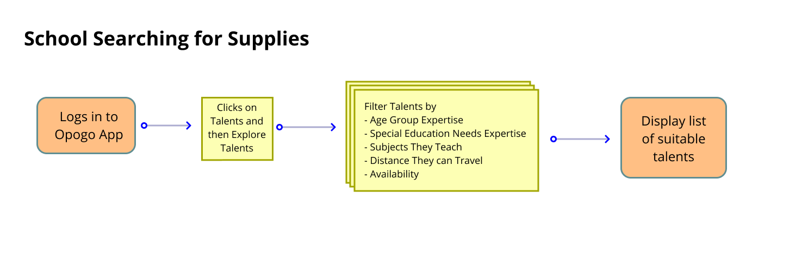
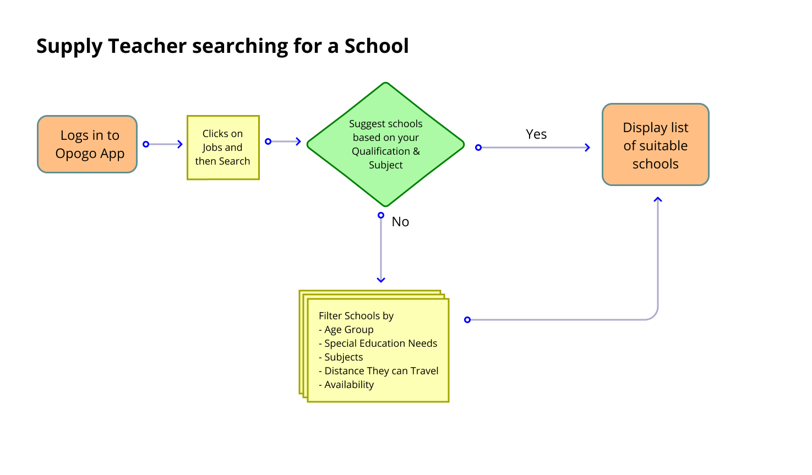
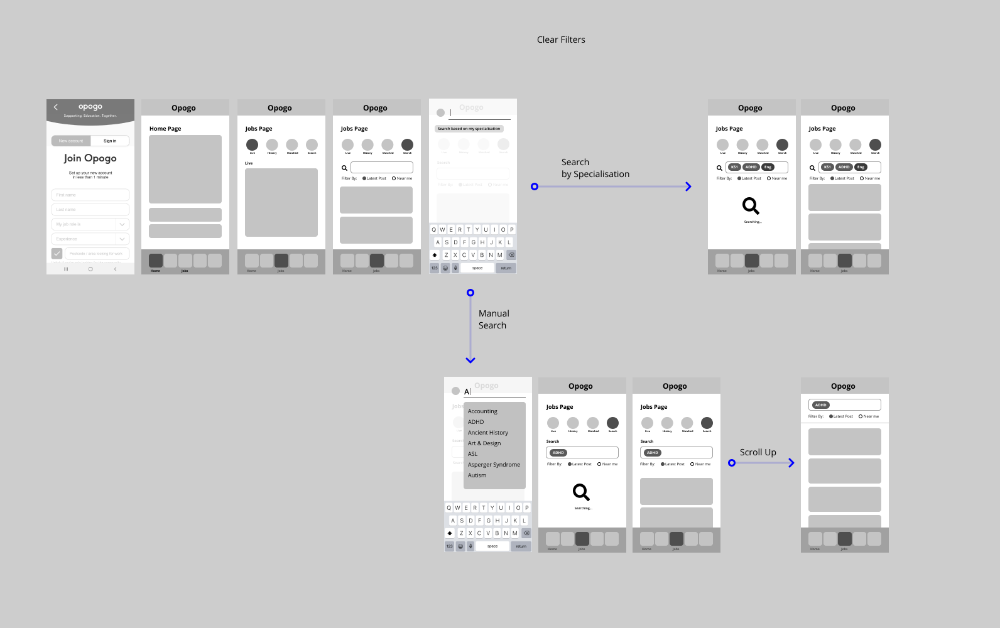
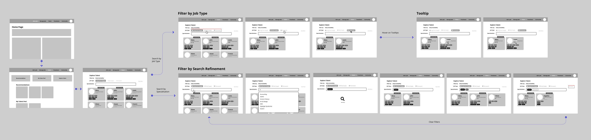

October 2020 - December 2020
In October 2020, I've joined an online UI/UX class organized by Experience Haus in the UK. As part of the course, I was provided the opportunity to work together with a real client, Opogo. They are a Social Enterprise that brings together technology and expertise to help support educators and schools.
There are 12 participants and we are grouped into 4 teams. Each team will be carrying out their research and proposing their solutions
"81% of educators are considering leaving the profession in the previous 12 months because of workload pressures"
There is a very high demand for teachers in the UK and there are various recruitment agencies that serve to fill this gap. However, hiring teachers can be a very costly matter. Some schools had reportedly paid up to £11,000 in finder's fees to recruit teachers, making the hiring process very costly for both schools and educators.
Teacher retention was poor. Educators had been leaving the profession due to workload pressure and a stressful working environment. At the time of writing, this situation had been exacerbated by the 2020 COVID pandemic. Overseas teachers can't travel abroad and this leads to a drop in potential teachers.
Opogo is among one of the education platforms out there which aims not only to help schools save costs but to also find solutions to improve retention
Opogo's main user base is supply teachers and schools. While teachers use the Opogo app on mobile to look for jobs, the schools play a more active role in looking for teachers via the Desktop app.
Teachers firstly go through a compliance process in which they upload their credentials to be verified by the Opogo team. Verified teachers will be able to pick the time and date they are available for work and also set the distance they can travel. On the other end, Cover Managers will be able to scout, hire and manage their talents all on their talent pool in the desktop app.
Apart from that, Opogo also has a thriving community of teachers who shares their learning and inspire each other.
Opogo was interested in improving the user experience for their current app before developing the platform further. In the provided design brief, we were required to review the following flows:
While these are the main requests, we'll also be looking to point out other potential areas of improvement. We approach this challenge with the guidance of the Double Diamond Process
In this course, I work together with another 2 students from different backgrounds. We conducted our interviews and research together to form the 3 problem statements. Each of us picked one of the issues to work on individually, and finally presenting all 3 solutions in a single flow.
As this is a learning course, there's a lack of time to go through every process thoroughly and this leads to several outcomes:
Firstly, we had an interview with Opogo's CEO, Justyn. This interview yielded several insights that are helpful for us to get started on the project:
Opogo is not the only app out there that's trying to tackle this issue. Apps such as Zen Educate, Engage Education, SickCover were also competing in the same field. While these aforementioned apps shared certain similarities with Opogo. We are more interested in what sets them apart
While not all of these are applicable suggestions for Opogo as they have a different mission, it nonetheless does provides ideas on how Opogo can expand their services
During this phase, we were introduced to various UX processes, each of them serves a specific need and we were encouraged to try all of them out to learn and explore what each tool does best.
Opogo has developed its own set of user personas but it has been a while since it was updated. We started off our research by asking scoped questions to get details on specific areas. This includes the teacher's background, struggles, motivations, and how we can help them. Examples:
In one of our classes, we held our first user interview with 2 Opogo users. They were interviewed by 2 students in our class while we take notes. Apart from that, Our team also conducted our interviews with a few more teachers to form a better picture of our user personas.
For each interviewee, we present their feedbacks in the structure shown on the image. With more information gathered from different interviewees, we'll be able to see trends or common behaviors that will help us to form our Personas
We also created an empathy map that puts ourselves in the shoes of the teachers
This approach makes us think about the possible experiences of a supply teacher. Giving us insights on how we could design solutions that are tailored to their needs
The previous maps paint a common behavioral pattern among our interviewees, and this leads to the formulation of 3 personas.
Due to the interest of time, we decided to form our solution based on 1 persona: The Rep for Temps AKA the temporary supply teacher. This is because our team kept in touch with a teacher from the user interview that fits this role. She's also open to participating upcoming interviews and user tests.
As opposed to a permanent teacher, temporary supplies are teachers whom are generally on the move. They valued the flexibility offered by a temporary position. During this short stint before they relocate, they are looking for a temporary role to fill in to get more income.
Next, we took a deeper look into the journey of our persona and how she goes through a journey to look for a job to gain a better understanding of the flow that she went through. This approach focuses more on the tasks that a teacher might do at a specific stage of their journey.
Apart from that, we also tried another approach to understand our persona's journey better. This method explores the user journey on a more empathetic level.
From this map, there are a few low points, but the one that stood out to us was the last one. Teachers feels anxious on their first day to school.
Based on experience maps and our user interviews, we started to form user stories. Each of them focuses on a problem our persona is trying to solve and when do they need it solved.
It's generally framed in the following method:
As a _(user)_, I would like to __ (action)___ so that I can __ (what is success?)___.
We also explore another option with the Jobs-to-be-done framework. This reframes our perspective on the issue and prompts us to think about what causes teachers to use Opogo in the first place. How does it enable our teachers to perform their jobs?
It's framed as the following:
When __(trigger) __ , I want to __ (action)___ , so I can __ (success criteria)___
We eventually form problems in these 3 areas.
From the problems above, we have formed 3 hypothesis
We create several ideas
From this we create the user flow
Desktop App - Schools Searching for Teachers
Mobile App - Teachers looking for Schools
Desktop App
Mobile App
“The current search results includes tags from all 3 categories. There’s no easy way to tell them apart. Perhaps a search by category function would help!”